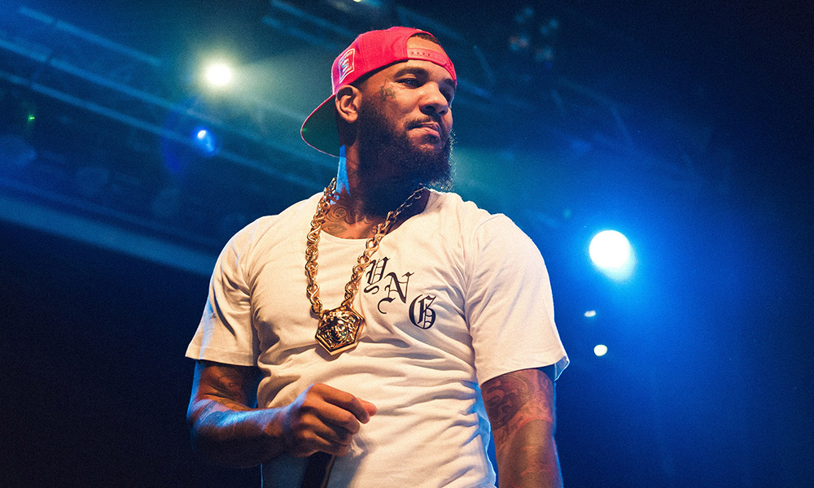
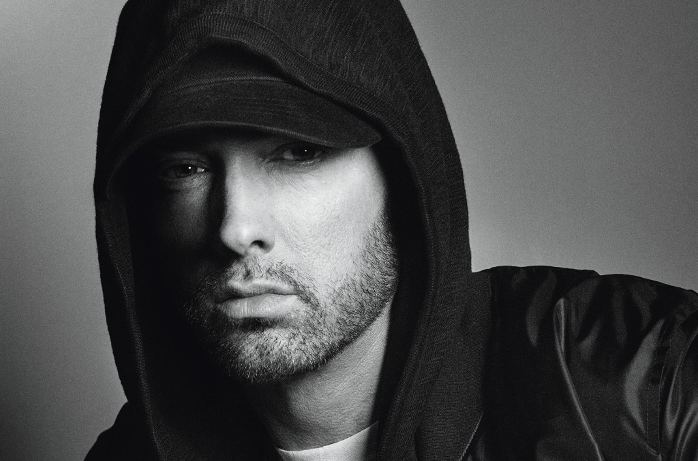
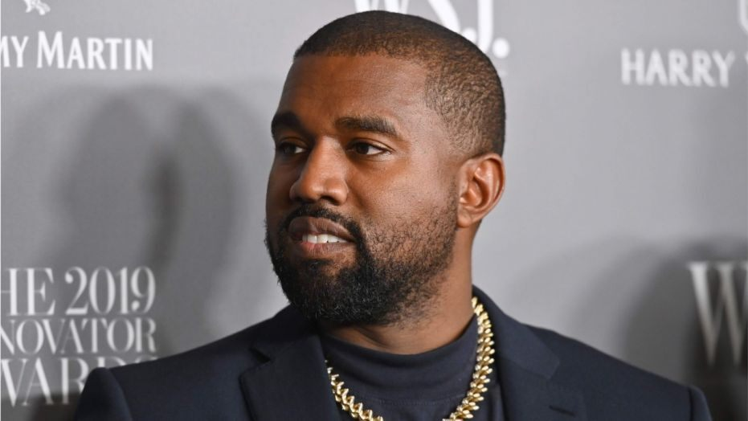

-
Court Forces The Game to Release Album Royalties to Sexual Assault Accuser
Show moreAn Illinois Court is turning over the finances from The Game’s latest album to his sexual assault accuser according to a new report. After a 2016 ruling that demanded Game to pay $7 million to his accuser, Priscilla Rainey, courts have now decided that Game will ante up the money via Born 2 Rap royalties according to Allhiphop.com. After a 2019 failed appeal to the $7 million payouts to Rainey, the courts are also turning over ownership of the West Coast rapper’s independent label LA Prolific. According to the report, Game could face contempt of court charges if he continues collecting money through LA Prolific and Born 2 Rap. Game was originally accused of sexual assault in 2015 by Rainey who claims the rapper put his hands on her bare vagina during the taping of Game’s reality show She’s Got Game. Advertisement Rainey claims that while taping in Chicago, Game, whose real name is Jayceon Taylor, groped her in the middle of a sports bar when the cameras weren’t rolling. The 40-year-old Compton native has denied all claims of sexual assault against him, but by missing court dates related to the charges Rainey came out victorious in the courts. Game’s 9th album dropped in November 2019 selling just over 20,000 units in the first week. At the time of release, Game said that this would be his retirement album.
-
Birdman to Pay for Uptown, New Orleans Residents’ Rent Amid Coronavirus Pandemic
 Show more
Show moreBirdman is giving back to his hometown. On Monday (April 20), Birdman announced via Instagram that he would be paying rent for residents from his old Uptown, New Orleans neighborhood during the coronavirus pandemic. "I would like to offer to pay everybody rent for month of May (for those who in need) in residents area of UPTOWN New Orleans where I was born and raised at from mac melph calio and ST Thomas housing also from third ward to 17th ward I would like HANO to support us on accomplishin this and @q93fm," Birdman wrote. The Cash Money Records co-founder also called on the mayor of New Orleans LaToya Cantrell to support his cause, before thanking the hospital workers who have worked diligently during this time. "I also spoke with @theuptownangela to help me put this togather I would like our mayor @mayorcantrell help support this cause also wanna thank all hospital on front line Risking they life to save lives I wanna thanks everybody that wrk with tha Gladys and Johnny foundation my company cash money records."
-
Eminem Celebrates 12 Years of Sobriety After years of battling with substance abuse
Show moreEminem is celebrating a significant milestone in his life. On Monday (April 20), Em shared on Twitter that he has achieved 12 years of sobriety. In the social media post, the 47-year-old MC uploaded an image of a blue sobriety chip with the number 12 in the middle. The Detroit rapper captioned the photo, "Clean dozen, in the books!," before ending the quote with his song lyric, "I'm not afraid." Last year, the "Lose Yourself" rapper posted a similar message to his Instagram account marking 11 years of sobriety. He captioned the photo, "11 years - still not afraid." Eminem started his journey to fight his addiction against prescription pills like Vicodin, Valium and Ambien in 2008. Two years later, he dropped his seventh studio album, Recovery. The introspective album marked the beginning of the next phase in his life. In 2009, Em spoke to XXL about his struggle with drug abuse. "I wasn't ready mentally. I wasn't ready to give up the drugs," Em said. "I didn't really think I had a problem. Basically, I went in, and I came out. I relapsed, and I spent the next three years struggling with it. Also, at that time, I felt like I wanted to pull back, because my drug problem had got so bad. I felt like, Maybe if I take a break, maybe this will help. I started to get into the producer role more... I can still be out there with my music, like with the Re-Up album, but I don't have to be in the spotlight the whole time." Since releasing Recovery in 2010, Em returned with Revival in 2017. Shortly after, Eminem dropped Kamikaze in 2018. His latest album, Music to Be Murdered By, took fans by surprise with an unannounced release in January of this year.
-
Kanye West and Chick-fil-A Serve 300,000 Meals Amid Coronavirus Pandemic
Show moreKanye West and Chick-fil-A seem to have more than a song and a music video in common. The two have partnered with the Los Angeles Dream Center, a nonprofit Christian organization, to serve at least 300,000 meals amid the coronavirus pandemic. On Monday (April 20), Fox News reports that Kanye and the fast-food franchise have provided around 11,000 meals a day since March in L.A., the second-largest school district in America. The Los Angeles Dream Heart founder Matthew Barnett told the outlet that thanks to West's donation, the organization was able to give more food to those in need. He also detailed the work the Christian organization had been doing to help communities affected by the coronavirus. "The Los Angeles Dream Center has transformed into the Grand Central Station of food distribution and other basic essentials. I'm so grateful that our team has stayed healthy, and that we've found a safe way to meet the urgent needs within our community. I can't say thank you enough to the various donors who've made this a reality," Barnett said. "This is what a neighborhood, a community, and a church should always look like." Kanye West is among rappers and producers like Quavo, DJ Khaled and Jay-Z that have chosen to give back to those in need while millions are impacted by the coronavirus pandemic. Last Thursday (April 16), 2 Chainz and his business partner, Mychel "Snoop" Dillard, donated meals from their Escobar restaurant to feed healthcare workers at the Southern Regional Medical Center in Atlanta.